Research.
My research right now is mostly focussed on the development of my master's thesis. I am working under the supervision of Prof. Dr. Patrik Ferrari and Dr. Pedro Cardoso in the Interacting Random Systems group↗ within the Institute for Applied Mathematics. My work centers around an article by Dr. Cardoso on obtaining the fractional porous medium equation from a microscopic IPS↗. The interest of this process comes from allowing particles in our system to jump arbitrarily far. This is a substantial difference with more classical models like the TASEP, where jumps are only allowed within neighbours. This peculiarity makes our system highly non-local, which makes the convergence to a nonlocal PDE not so surprising.

Prior to Bonn, I worked on different projects, like my bachelor’s thesis, where I developed a constrained regularization framework for controlling predictive error across subgroups while retaining the stability and variable-selection properties. This work was completed at the University of Seville under a collaboration grant and is available in the university repository ↗. I have also worked on mixed-integer optimization for battery-limited drone routing ↗ in the Mathematics Insititute of the University of Seville. Its implementation, together with more projects of mine on statistics and ML can be found in my GitHub ↗.